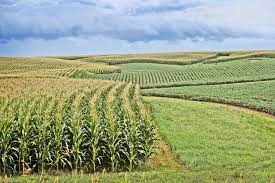
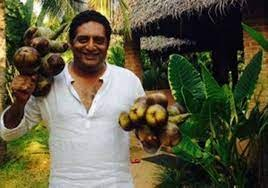
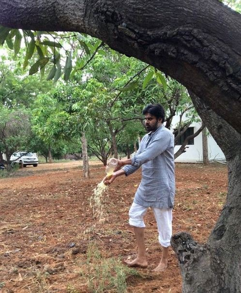
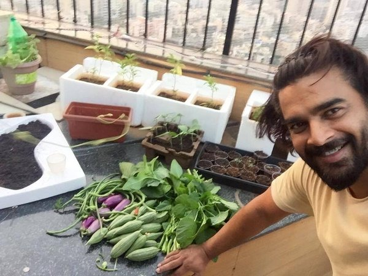
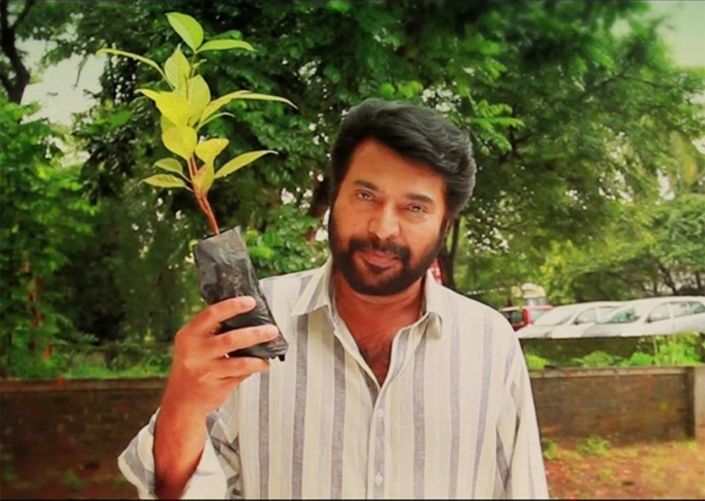
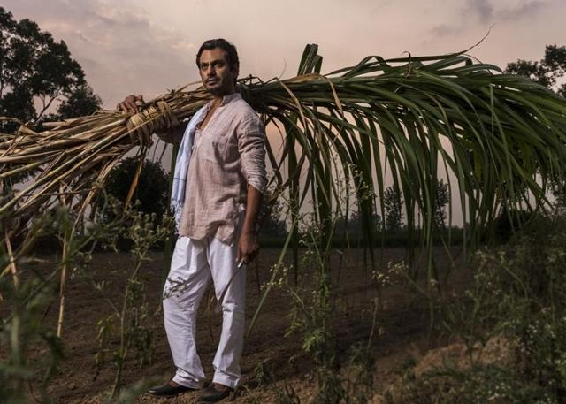

Agritourism offers farmers the possibility of diversifying and generating additional income through on-farm touristic activities in order to help supplementing their low agricultural income. This helps to maintain the viability of active farms and rural communities. The more general understanding of agritourism states that agritourism activities support and promote agricultural resources, traditions and culture. Following this line of thought, agritourism results to be a successful example of sustainable tourism that has gained importance over the years.
In an increasingly mechanized world, many people have lost touch with how their food is produced, or the region where it originated. Agritourism offers tourists a chance to reconnect with the land, providing a "hands on experience" with local foods. Agritourism activities include picking fruits, tasting wine, tending bees, milking cows and other educational pursuits. Agritourism immerses visitors in the heritage of a particular culture. Take the time to stop by a working farm or ranch, you will most likely discover people with an intimate knowledge of the history and traditions of their region.
Agritourism focuses on travel that is low-impact and empowering to local communities, both socially and economically. Recognizing the need to diversify their farm products and supplement their agricultural incomes, many farmers consider agritourism as a viable option for the long-term sustainability of their farms. Agritourism can prop up an agricultural economy when local producers can no longer compete economically. The tourism takes place in a farm setting and is secondary to the primary agricultural operation.
POPULAR PROMOTIONS OF AGVENTURE The influence of cinema actors is always overly excessive. Our marketing team made all the arrangements to request and invite celebrities of the film industry. Actors from different industries were invited and their affirmation is highly appreciated. Actors like MADHAVAN , MAMOOTY , NAWAZUDDIN SIDDIQUE, PAWAN KALYAN and PRAKASH RAJ were invited from kollywood, mollywood, tollywood and bollywood industries.
    